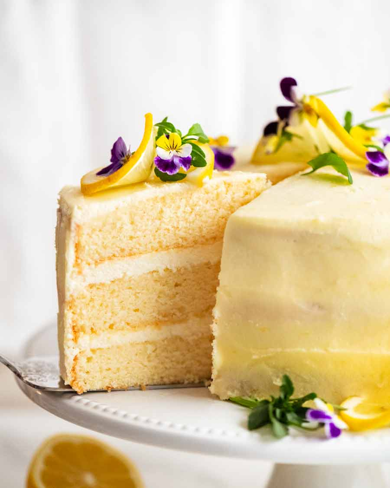
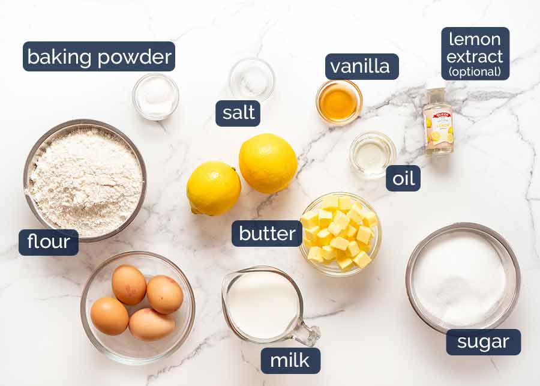
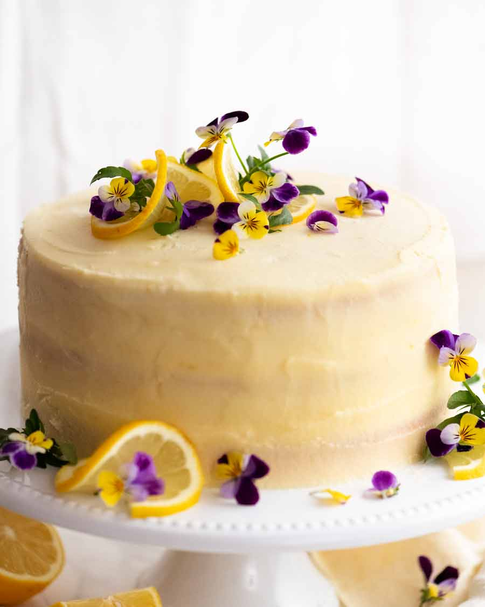

My favorite cake is...

How to make this cake

- Beat eggs and sugar for 7 minutes until tripled in volume. This is the secret to the beautifully light, plush texture of the cake!
- Add dry ingredients – Whisk the dry cake ingredients in a bowl (ie. flour, baking powder, salt). Add the dry Ingredients in 3 batches to whipped egg mix, mixing on Speed 1 for 5 seconds after each addition. Stop as soon as most of the flour is mixed in.
- Hot milk mixture – Whisk hot milk, melted butter, oil, lemon juice, lemon zest and lemon oil in your now-empty flour bowl. You will see little lumps which is the zest.
- Lighten the hot milk mixture – Add some of the egg batter into the hot milk mixture. The purpose of this step is to lighten the hot milk mixture before combining it with the batter so it is incorporated more easily. The batter is beautifully aerated and this technique thus helps preserve all those air bubbles we created in Step 1.
- Mix on low speed until just-combined. We don’t want to knock out all those air bubbles we created, remember!
- Cake pans – Divide the batter between the cake pans, then smooth the surface.
- Bake for 23 minutes. If they don’t all fit on one shelf, put 2 on the middle shelf and one on the shelf below. Take the top 2 from the oven at 23 minutes, then move the bottom one up a shelf and bake for a further 2 minutes.
—
Recipe from
Recipe tin eats.

This cake
is the best , lemon cake
you will ever eat!
here
Zesty.